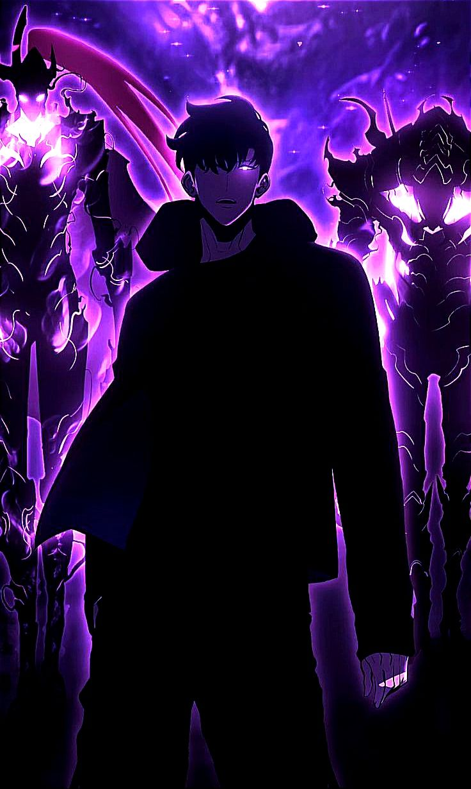

Status window
Player Jinwoo
PLAYER FILE / 001
Active record
// SHADOW MONARCH DOSSIER

FORMER E-RANK · SYSTEM PLAYER
Sung Jinwoo
Chosen by the System after surviving the Double Dungeon, Jinwoo gained the ability to grow stronger through its quests. He rose from humanity's weakest hunter to the Shadow Monarch.
Registered rankS-Rank
Class evolutionNecromancer → Shadow Monarch
Current statusActive
01 / SYSTEM PROFILE
Attributes
Attribute values are not published in the referenced profile.
- 01Strength
- Physical strength, speed, and attack power.
- 02Agility
- Dynamic vision, reaction speed, and evasion.
- 03Stamina
- Maximum health and recovery speed.
- 04Intelligence
- Maximum mana and mana recovery speed.
- 05Sense
- Sharper senses and danger perception.
02 / ARMORY
Known weapons
Recorded across his career
- 01Kasaka's Venom Fang
- 02Knight Killer
- 03Baruka's Dagger
- 04Demon King's Daggers
- 05Demon King's Longsword
- 06Kamish's Wrath
- 07Antares' Fangs
03 / COMBAT SYSTEMS
Skills & techniques
Named abilities and combat methods
Active skills
- StealthConceals his presence and suppresses traces of mana.
- BloodlustIntimidates targets and lowers their stats.
- QuicksilverTemporarily increases movement speed.
- Ruler's AuthorityTelekinetic control of objects and movement.
- Dragon's FearA mana-infused roar that overwhelms weaker opponents.
Shadow Monarch skills
- Shadow ExtractionRaises a defeated enemy as a shadow soldier.
- Shadow PreservationStores shadows and lets him perceive through them.
- Shadow ExchangeTravels instantly between shadows.
- Monarch's DomainStrengthens active shadow soldiers in battle.
Passive abilities
- Will to RecoverRegenerates severe, nonfatal injuries.
- Longevity & ImmunityResists disease and poison, with enhanced recovery.
- DetoxificationClears poison from his system.
- TenacityReduces incoming damage at critical health.
Dagger techniques
- Advanced Dagger TechniquesIncreases damage dealt with daggers.
- MutilationTargets vital points for critical strikes.
- Dagger RushAttacks from multiple directions in a rapid barrage.
04 / COMBAT LEDGER
Late-series spoilers
Notable kills
Lifetime totalNot published
The referenced profile does not give a cumulative kill count.
- Hwang DongsooS-Rank Hunter
- RakanBeast Monarch
- AntaresDragon Monarch
Research: Sung Jinwoo profile and System reference. This fan-made dossier does not assign canon attribute scores or a cumulative kill total.